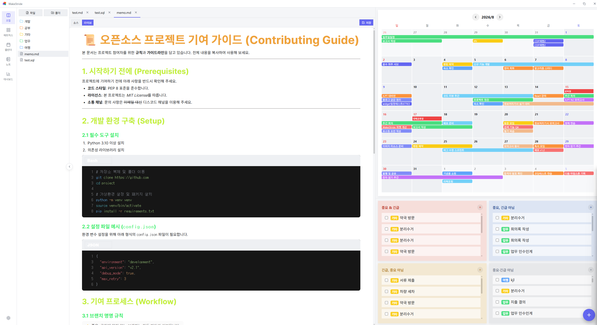
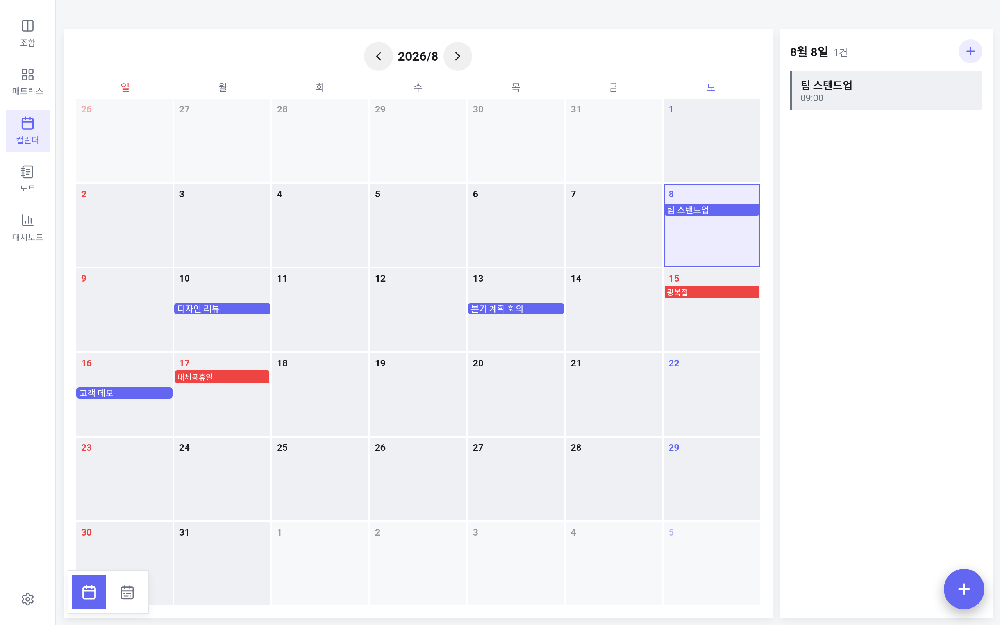
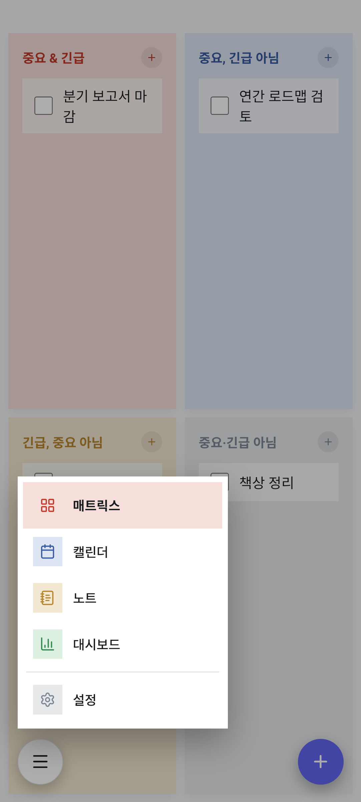
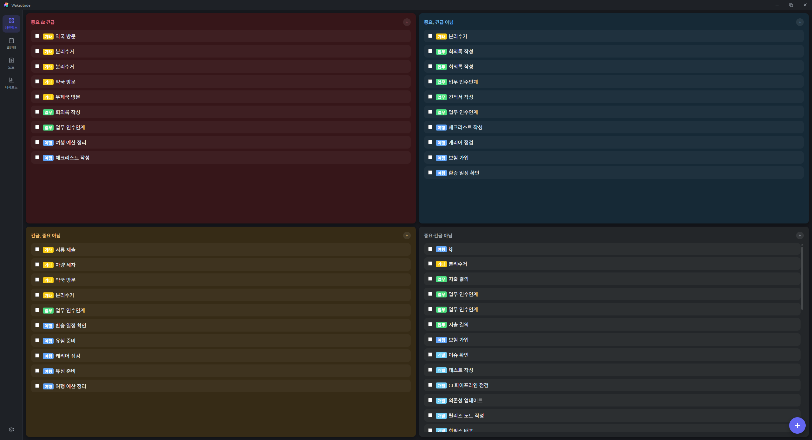
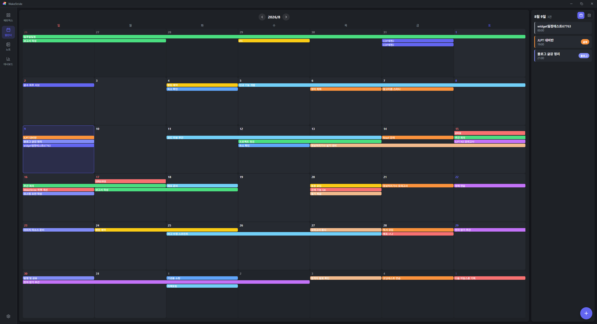
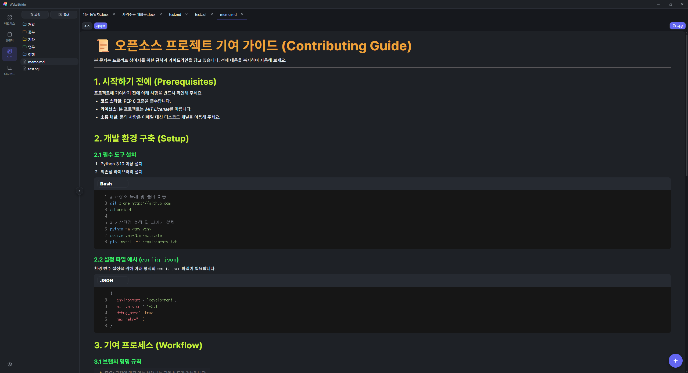
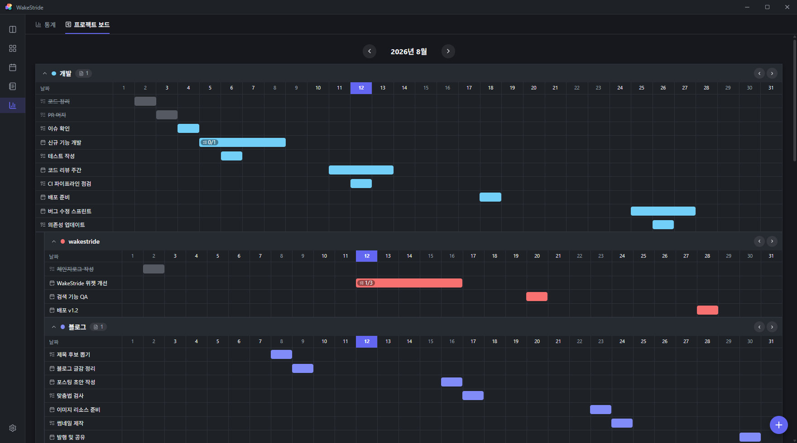
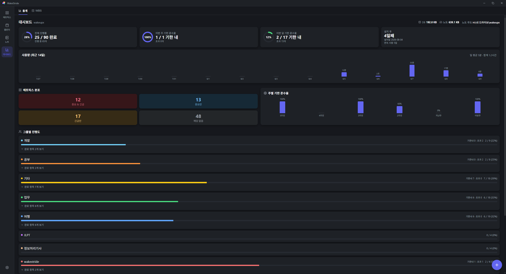

WAKESTRIDE
일의 순서를,
다시 정의하다.
중요한 일과 급한 일을 가려내고,
캘린더와 노트가 그 흐름을 그대로 이어갑니다.
Windows 데스크톱
macOS 데스크톱
Android 태블릿 · 폰
iOS · 준비 중



우선순위
무엇부터 해야 할지,
고민하지 않게.
중요도와 긴급도, 두 가지 기준으로 할 일을 네 영역에 자동으로 나눕니다.
지금 진짜 해야 할 일이 선명해집니다.

일정
한 달과 하루를,
한 화면에서.
월간 그리드와 하루 일정이 나란히 놓입니다.
좌우로 넘기면 다음 달, 클릭 한 번이면 그날의 일정까지.


기록
쓰는 것과
해내는 것을 잇다.
마크다운으로 기록한 노트가 할 일·일정과 서로 연결됩니다.
맥락은 그대로, 흐름은 끊기지 않게.
프로젝트 관리
그룹, 일정, 할일—
그 흐름 그대로 프로젝트가 됩니다.
노트 폴더가 그룹이 되고, 그룹 아래 일정을 두고, 일정 아래 할일을 쪼갭니다.
프로젝트 보드에서 전체 진행 상황이 한눈에 보입니다.

통계
얼마나 해냈는지,
숫자로 확인.
그룹별 진행률과 기한 준수율, 최근 사용량까지.
오늘의 성과를 한눈에 확인합니다.
0%
전체 진행률
0%
이번 주 기한 준수율
0%
이번 달 기한 준수율

데스크톱 위젯
바탕화면에도,
그대로.
캘린더와 매트릭스를 바탕화면에 붙박이로 띄워두고,
앱을 열지 않아도 오늘 할 일을 바로 확인합니다.
어디서나 하나의 앱
같은 데이터, 같은 흐름 — 데스크톱에서 시작하고 이동 중엔 휴대폰으로.
🖥️
Windows
데스크톱 · 위젯💻
macOS
데스크톱📱
Android
태블릿 · 폰🍎